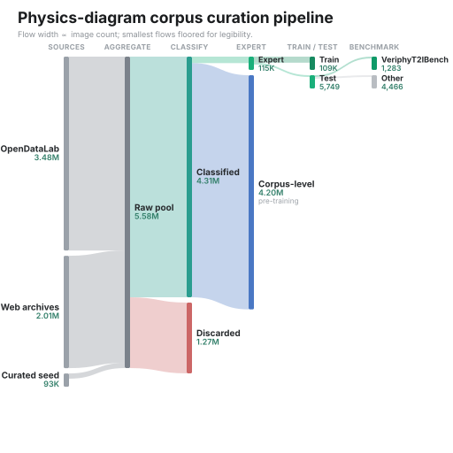
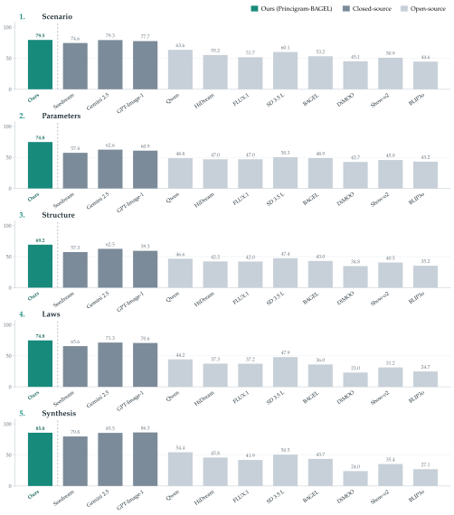

Generation failures
Small visual mistakes can violate the underlying physics even when the figure appears convincing.
Physics-faithful scientific diagram generation
Towards Physics-Faithful Generation of Scientific Diagrams
01 · Motivation
Generic text-to-image systems can draw polished scientific figures while reversing a force, breaking a circuit topology, bending a ray in the wrong direction, or pairing an equation with the wrong physical state. In education and scientific communication, these are not cosmetic errors—they are misinformation.
Small visual mistakes can violate the underlying physics even when the figure appears convincing.
A multimodal model may describe the correct physics and still fail to render the same relationships.
A CLIP-style alignment score can prefer a physically incorrect image, while an open-vocabulary detector cannot verify the directions, incidences and orderings that determine correctness.
What we introduce
01
A fixed, auditable five-step schema replaces flat captions with an explicit reasoning chain constrained by fidelity rules.
02
4,313,866 physics images with structured annotations, including 115,037 expert-level image–annotation pairs across six subdisciplines.
03
Two-stage structured supervision transfers across BAGEL and DiMOO unified multimodal backbones.
04
Item-specific binary checks report judge outcomes for named objects, forces, states and their attributes.
02 · Method
SP-CoT makes the physics of a diagram explicit and auditable. It separates visually grounded facts from physically inferred reasoning, requires mathematical content to be typed symbolically in valid LaTeX, and leaves missing information empty instead of guessing.
Identify the scene, system, phenomenon, objects and constraints.
Declare states, components, variables and physical parameterization.
Analyze forces, interactions, topology, paths or basis-state structure.
Choose coordinates, conventions, governing principles and equations.
Summarize the key physical relationship and idealizing assumptions.
In each subdiscipline's two designated image-faithful steps, only elements explicitly drawn in the source diagram may be recorded.
Fields in the remaining steps may be inferred only when they can be logically deduced from the drawn elements; otherwise they remain empty.
| Discipline | Scenario | Parameters | Structure | Laws | Synthesis |
|---|---|---|---|---|---|
| Mechanics | Objects, attributes & constraints | Motion state & kinematic variables | Force analysis | Coordinate system & Newton's laws | Key relationship & assumptions |
| Electromagnetism | Subdomain & problem type | Components, sources & parameters | Circuit topology / field distribution & state | Conventions & Kirchhoff / Maxwell laws | Key relationship & assumptions |
| Physical optics | Phenomenon type | Components & parameters | Optical path, path & phase difference | Principles & condition equations | Key relationship & assumptions |
| Thermodynamics | System definition & problem type | Thermodynamic states P, V, T | Process path & energy transfer | Governing laws & equations | Key findings & assumptions |
| Acoustics | Scene & phenomenon | Components & parameters | Geometry & wave analysis | Conventions, principles & equations | Key relationship & assumptions |
| Quantum mechanics | Formalism, scenario & degrees of freedom | Hamiltonian / landscape & parameters | Boundary conditions / basis & eigenstates | Evolution & measurement equations | Key phenomena & assumptions |
Green cells are constrained to contain only information explicitly visible in the source diagram.
03 · Physics diagram corpus
Images from four complementary sources pass de-duplication, resolution, classification and quality filters before being routed to six physics subdisciplines. Every retained image receives a structured annotation; a human-verified expert tier supports supervised fine-tuning and all evaluation.

Final paper counts
Images per physics subdiscipline
| Subdiscipline | Structured | Expert total | Train | Test | Benchmark |
|---|---|---|---|---|---|
| Mechanics | 1,938,649 | 27,583 | 26,204 | 1,379 | 300 |
| Electromagnetism | 240,025 | 41,927 | 39,831 | 2,096 | 173 |
| Physical optics | 48,282 | 8,419 | 7,999 | 420 | 168 |
| Thermodynamics | 346,904 | 9,026 | 8,575 | 451 | 163 |
| Acoustics | 641,477 | 6,489 | 6,165 | 324 | 320 |
| Quantum mechanics | 1,098,529 | 21,593 | 20,514 | 1,079 | 159 |
| Total | 4,313,866 | 115,037 | 109,288 | 5,749 | 1,283 |
04 · VeriphyT2IBench
Each of the 1,283 benchmark diagrams yields two binary question banks: a rule-generated local bank covering objects, forces, states and their attributes, and a small model-generated global bank about the whole diagram. The GPT-4o judge sees only the generated image and questions—not the gold answers—so Local scores decompose into named physical facts.
Rule-generated checks enumerate the individual physical facts represented in each item.
A small model-generated bank of whole-diagram questions probes overall physical faithfulness.
An item passes only when the wrong-answer fraction on its local bank stays within a 0%, 5% or 10% tolerance.
05 · Results
The gains transfer across two unified multimodal backbones with different mechanisms and scales. The paper finds that the dominant variable is what the model is trained on, not its size or which unified formulation it uses.

VeriphyT2IBench
Selected models
Overall scores (%)
| Model | Veriphy Local | Veriphy Global | GenExam Relaxed |
|---|---|---|---|
| Gemini 2.5 Flash Image | 69.98 | 66.14 | Not reported |
| GPT-Image-1 | 68.32 | 68.56 | Not reported |
| Seedream 4.0 | 64.80 | 65.07 | 49.0 |
| Qwen-Image | 51.79 | 60.20 | 26.3 |
| BAGEL | 46.38 | 62.15 | 13.8 |
| Princigram-DiMOO | 72.05 | 77.25 | 50.4 |
| Princigram-BAGEL | 75.69 | 82.54 | 54.8 |
Fully faithful generation remains far from solved. At zero tolerance, every subject–model score is 0.00 except three 0.31 scores in electromagnetism. At 10% tolerance, Princigram-BAGEL leads every subject except optics, and the absolute scores remain low across the board.
06 · Interactive explorer
The larger qualitative and checklist viewers are loaded only when selected, keeping the main page lightweight while preserving the interactive supplementary viewers.
Scope and limitations
The present schemas cover six physics subdisciplines; chemistry, biology and other sciences require dedicated structured templates.
The expert-level subset is verified by human experts. Corpus-level annotations are machine-generated and unverified; fidelity rules constrain them but do not guarantee correctness.
Both GenExam and the binary-checklist evaluator rely on a vision–language model to answer checks, so their scores remain proxies for expert judgment.
The strongest closed models still set the reference in some settings, while absolute GenExam physics scores remain low across the field.
Citation
If this work supports your research, please cite the arXiv preprint.
@misc{zhang2026towards,
title = {Towards Physics-Faithful Generation of Scientific Diagrams},
author = {Zhang, Minghui and Shi, Jinxin and Chang, Yifan and
Zhao, Liangliang and Pu, Yuandong and Yu, Qian and
Hu, Ming and Zhang, Hanxiao and Gu, Yun and Chen, Yirong and
Qiao, Yu and Zhang, Bo and Yan, Xiangchao and Fu, Bin and Liu, Yihao},
year = {2026},
eprint = {2608.13112},
archivePrefix = {arXiv},
primaryClass = {cs.CV},
url = {https://arxiv.org/abs/2608.13112}
}